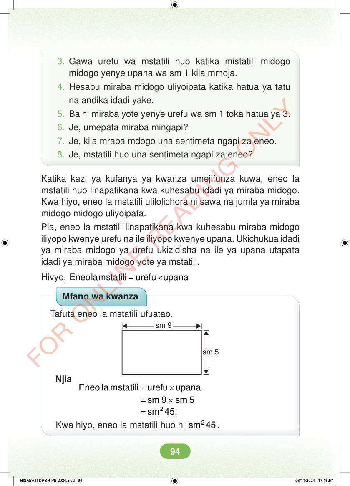

3. Gawa urefu wa mstatili huo katika mistatili midogo midogo yenye upana wa sm 1 kila mmoja. 4. Hesabu miraba midogo uliyoipata katika hatua ya tatu na andika idadi yake. 5. Baini miraba yote yenye urefu wa sm 1 toka hatua ya 3. 6. Je, umepata miraba mingapi? 7. Je, kila mraba mdogo una sentimeta ngapi za eneo. 8. Je, mstatili huo una sentimeta ngapi za eneo? Katika kazi ya kufanya ya kwanza umejifunza kuwa, eneo la mstatili huo linapatikana kwa kuhesabu idadi ya miraba midogo. Kwa hiyo, eneo la mstatili ulilolichora ni sawa na jumla ya miraba midogo midogo uliyoipata. Pia, eneo la mstatili linapatikana kwa kuhesabu miraba midogo iliyopo kwenye urefu na ile iliyopo kwenye upana. Ukichukua idadi ya miraba midogo ya urefu ukizidisha na ile ya upana utapata idadi ya miraba midogo yote ya mstatili. Hivyo, = × Eneolamstatili urefu upana Mfano wa kwanza Tafuta eneo la mstatili ufuatao. sm 9 sm 5 Njia = × Eneo la mstatili urefu upana = × sm 9 sm 5 = 2 sm 45. Kwa hiyo, eneo la mstatili huo ni 2 sm 45 . HISABATI DRS 4 PB 2024.indd 94 HISABATI DRS 4 PB 2024.indd 94 06/11/2024 17:16:57 06/11/2024 17:16:57